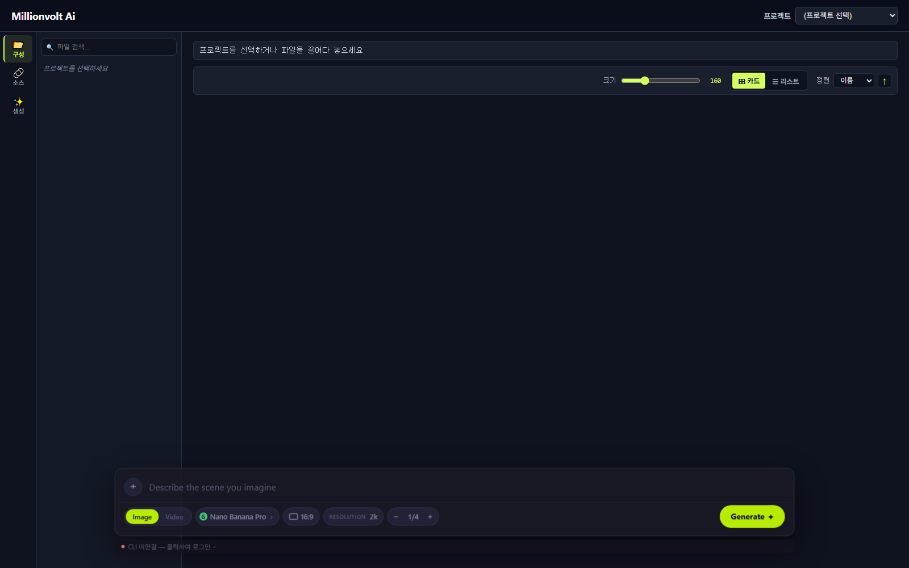

브라우저로 프로젝트 폴더 안의 이미지/영상을 보고, 즐겨찾기·태그·색 마커로 분류하고, Higgsfield Spotlight 로 생성한 결과까지 한 곳에서 관리하는 도구.
설치/배포 문서는 README.md 참고. 이 문서는 이미 실행 중인 PV 를 어떻게 쓰는지 만 설명합니다.

전체 화면 구성 — 상단 헤더(프로젝트 선택), 좌측 사이드바(3개 탭), 우측 그리드, 하단 Spotlight 패널
┌────────────────────────────────────────────────────────────────────┐
│ [프로젝트 ▾] 헤더 │
├──────────────────┬─────────────────────────────────────────────────┤
│ 사이드바 │ 우측 영역 │
│ │ │
│ [구성] [소스] [생성]│ ┌─[전체 ▾] [🔴][🟢][🔵]──────────────┐ │
│ │ │ 종류 필터 색 필터 │ │
│ ┌─트리/리스트──┐ │ │ │ │
│ │ Result/ │ │ │ 카드 그리드 │ │
│ │ img1.png │ │ │ [📷] [📷] [▶] [📷] │ │
│ │ img2.png │ │ │ [📷] [▶] [📷] [📷] │ │
│ │ ... │ │ │ │ │
│ └──────────────┘ │ └──────────────────────────────────────┘ │
│ │ │
│ [Spotlight ▾] │ │
│ 생성 프롬프트 │ │
└──────────────────┴─────────────────────────────────────────────────┘
| 탭 | 내용 | 언제 쓰나 |
|---|---|---|
| 구성 | 프로젝트의 전체 폴더 트리 | 일반 폴더 탐색 / 파일 이동 / 이름 변경 |
| 소스 | 즐겨찾기로 표시한 항목들 (태그별 그룹) | 자주 쓰는 레퍼런스를 한 곳에서 |
| 생성 | Spotlight 작업 큐 (진행중·완료·실패) | 방금 만든 결과 확인 / 다시 보기 |
탭은 클릭으로 전환. 같은 탭을 한 번 더 누르면 사이드바 토글 (닫기/열기).
상단의 프로젝트 드롭다운에서 선택. 처음에는 비어 있으니:
1. <CCDATA_DIR>/projects/ 폴더 아래에 빈 폴더를 만들면 그것이 프로젝트가 됨
2. PV 새로고침하면 목록에 나타남
마지막 선택 프로젝트는 자동 복원됨 (브라우저 닫았다 다시 열어도).
PV 는 마우스 없이도 충분히 쓸 수 있게 키 매핑이 Windows 탐색기를 따릅니다.
화살표는 현재 focus 영역 에서만 동작. focus 영역은 4가지:
마지막에 클릭한 영역이 focus. Tab 으로 좌측 ↔ 우측 전환.
| 키 | 동작 |
|---|---|
| ↑ ↓ | 라벨 사이 이동 (우측 패널 안 바뀜) |
| ← | 펴진 폴더면 접기, 아니면 부모로 active |
| → | 접힌 폴더면 펴기, 펴진 폴더면 첫 자식으로 |
| Enter | 폴더 진입 / 파일 열기 |
| Home / End | 첫 / 마지막 라벨 |
| 첫 글자 | 그 글자로 시작하는 라벨로 점프 (cycle) |
| 키 | 동작 |
|---|---|
| ↑ ↓ | 항목 이동 |
| Shift+↑↓ | 범위 다중 선택 |
| Ctrl+클릭 | 개별 추가/제거 |
| 키 | 동작 |
|---|---|
| ↑ ↓ | 큐 카드 이동 |
| Shift+↑↓ / Shift+클릭 | 범위 다중 선택 |
| Ctrl+클릭 | 개별 토글 |
| Enter | 그 잡의 결과 그리드로 점프 |
| Delete | 선택 큐 카드들 일괄 제거 |
| 키 | 동작 |
|---|---|
| ↑ ↓ ← → | 카드 사이 이동 |
| Shift+화살표 | 범위 다중 선택 |
| Ctrl+클릭 | 개별 토글 |
| Ctrl+A | 그리드 전체 선택 |
| Enter | 폴더 진입 / 파일 열기 |
| Backspace · Alt+↑ | 부모 폴더 |
| F2 | 이름 변경 |
| Delete | 선택 삭제 |
| 첫 글자 | 그 글자 카드로 점프 |
| R / G / B | 선택 카드 색 마커 (아래 설명) |
| 키 | 동작 |
|---|---|
| ← → | 이전/다음 이미지·영상 |
| Esc | 닫기 |
| 키 | 동작 |
|---|---|
| Ctrl+Z | 마지막 작업 되돌리기 (이동/이름변경/마커 등) |
| Ctrl+Shift+N | 현재 폴더에 새 폴더 생성 + 인라인 이름 입력 |
| Esc | 라이트박스/팝업 닫기, 다중 선택 해제 |
자주 쓰는 레퍼런스를 모아두는 곳.
소스 탭 상단 또는 우측 그리드 상단에 태그 칩이 나옴. 칩 클릭 = 그 태그만, 같은 칩 다시 클릭 = 해제 (전체).
태그를 안 누르면 자동으로 전체 소스가 보입니다. 별도 "전체" 버튼 없음.
소스 그리드 상단 좌측 [전체 ▾] 드롭다운: - 전체: 모든 종류 - 이미지: 이미지만 - 동영상: 영상만
태그와 종류는 같이 적용됨 (둘 다 만족하는 것만).
생성 결과 중 마음에 드는 것을 빠르게 분류하는 도구. 빨강/초록/파랑 3색.
소스 탭은 색 마커 미지원 (태그가 그 역할).
마커가 붙은 카드는 배경색 이 변함. 선택해도 흰 테두리 + 색 배경 으로 둘 다 보임.
그리드 상단의 🔴 🟢 🔵 칩: - 칩 클릭 = 그 색만 표시 - 같은 칩 다시 클릭 = 해제 (전체)
1. 생성 결과 100개 → 우측 그리드에서 카드 화살표로 navigate
2. 마음에 드는 10개 → 클릭하고 R (빨강) → 빨강 배경
3. 빨강 칩 클릭 → 빨강 마커 10개만 표시 → 다시 검토
4. 그 중 베스트 3개 → 다시 G (초록) → 색 변경
5. 초록 칩 → 베스트 3개만 보임
색 정보는 <프로젝트>/_meta/colors.json 에 저장됨. 다른 PC 에서도 같은 프로젝트를 열면 그대로 보임.
이미지·영상 생성 패널. 모델/프롬프트/레퍼런스 지정 → "생성" 클릭.
/태그명 으로 즐겨찾기 태그, @소스명 으로 즐겨찾기 항목 직접 멘션<프로젝트>/Result/ 폴더에 저장 + 즐겨찾기 등록| 상태 | 의미 |
|---|---|
| 진행중 | Higgsfield 서버에서 처리 중 |
| 완료 | 다운로드까지 끝남 |
| 실패 | 오류 — 카드의 "상세" 버튼 클릭으로 사유 확인 |
큐 카드 클릭 → 우측 그리드에서 그 결과 파일이 자동 강조됨. 더블클릭으로 라이트박스.
소스 탭 외 모든 그리드 (구성/생성) 상단에도 종류 드롭다운 + 색 칩이 표시됩니다. - 종류 필터: 전체/이미지/동영상 - 색 필터: 전체/🔴/🟢/🔵 (구성·생성만)
폴더는 항상 보임 (네비게이션 보장).
PV 는 _meta/ 폴더에 모든 메타데이터를 저장. 사용자가 직접 만진 파일은 그대로 두고, 자동 관리만 이 폴더 안에서.
projects/<프로젝트>/
├── _meta/ ← 모든 메타 한 곳
│ ├── _generations/ ← 생성 결과 출생 증명서
│ │ └── <hash>.json
│ ├── favorites.json ← 즐겨찾기 + 태그
│ ├── jobs.json ← Spotlight 작업 이력
│ └── colors.json ← R/G/B 색 마커
├── Result/ ← Spotlight 자동 저장 위치
├── Reference/ ← 사용자 폴더 (이름 자유)
└── ... (다른 사용자 폴더들)
_meta/ 폴더는 PV 트리에 안 보임 (자동 숨김)_meta/ 안 모든 entry 도 자동 동기화사이드바 우측 가장자리를 드래그.
폴더의 ▶/▼ 클릭으로 접기/펴기. 상태는 자동 저장되어 다음 실행에도 유지됩니다.
.env 의 CCDATA_DIR 을 같은 NAS 폴더로 가리키면 됩니다. 파일/즐겨찾기/색 모두 자동 동기화 (SSE 실시간 push).
Ctrl+Z = Undo. 이동/이름변경/마커도 되돌릴 수 있음 (한 단계).
비디오는 보통 5~15분, 길면 30분 이상. PV 가 알아서 기다림. 큐 탭에서 진행 상태 확인. PV 를 끄거나 새로고침해도 백엔드가 계속 처리 → 다시 열면 자동 표시.
상단 종류 드롭다운/색 필터/태그가 활성화되어 필터링 중일 수 있음. [전체 ▾] + 색 칩 모두 비활성 + 태그 비활성 시 전체 표시.
우측 그리드에 카드를 선택한 상태에서만 동작. 사이드바에 focus 가 있거나 검색창에 입력 중이면 무시됨. 카드를 클릭하고 다시 시도.
터미널에서:
higgsfield auth login
브라우저로 로그인 → PV 새로고침.
[탐색]
Tab / Shift+Tab 영역 전환 (좌 ↔ 우)
화살표 카드/라벨 이동
Enter 열기/진입
Backspace · Alt+↑ 부모 폴더
첫 글자 이름 점프
[선택]
Ctrl+클릭 개별 토글
Shift+클릭 범위
Shift+화살표 키보드 범위
Ctrl+A 전체
[편집]
F2 이름 변경
Delete 삭제
Ctrl+Z Undo
Ctrl+Shift+N 새 폴더
[색 마커]
R 빨강 (같은 색 = 해제)
G 초록
B 파랑
[라이트박스]
← → 이전/다음
Esc 닫기
문서에 빠진 동작이 있거나 헷갈리는 부분이 있으면 알려주세요.